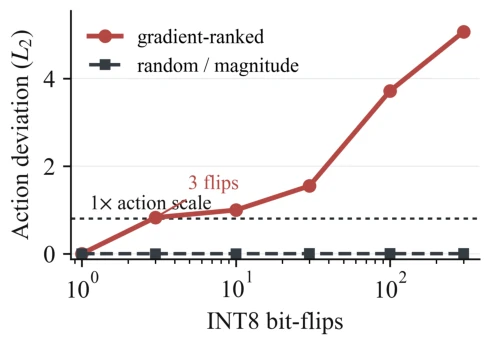
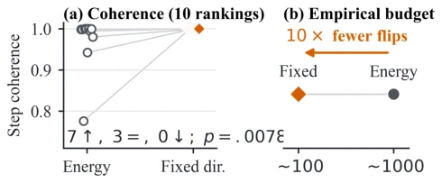
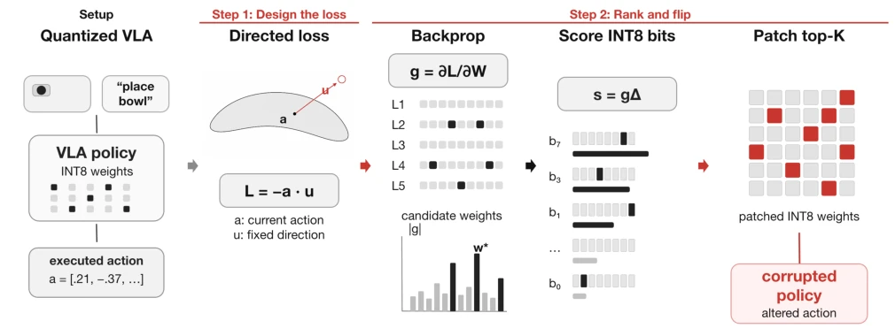
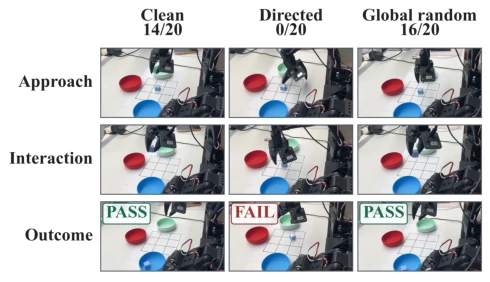
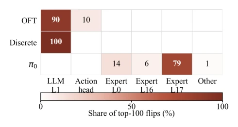

This paper pours cold water on the 'quantized security' dream of VLA. As the first bit-flip attack targeting VLA, it reveals that weight integrity is the security boundary of embodied foundation models. The highlight lies in discovering that architecture determines vulnerability: direct regression heads require only 1-5 flips to zero out closed-loop success rates, while Flow heads require a hundredfold budget. However, the authors mainly test logical faults rather than physical Rowhammer, raising doubts about physical accessibility in actual deployment. Furthermore, the high budget for Flow heads may stem from the attenuation characteristics of its iterative decoding, rather than absolute security. Although a local protection scheme is proposed, whether protecting 3%-5% of weights is cost-effective in large-scale models still needs consideration. In short, this is an excellent work that awakens security awareness, but do not expect it to directly guide physical defense; it is more of a theoretical alarm bell.
研究动机Motivation
现有 VLA 攻击多聚焦输入侧（如 AttackVLA [Li et al. 2025]）或训练后门（如 BadVLA [Zhou et al. 2025]），忽略了部署权重的物理脆弱性。边缘端部署常采用 INT8 量化（Kim et al. 2024），使权重面临类似 Rowhammer 的故障风险。既往位翻转攻击（BFA）主要针对分类器（Rakin et al. 2019），其输出为单次读取，而 VLA 的解码器动态会将微小误差通过闭环反馈累积。分类器的 BFA 预算无法预测闭环机器人失败。因此，研究需回答：多少权重翻转会导致闭环崩溃？攻击预算如何受解码器架构影响？这直接关系到具身模型在资源受限环境下的安全部署。
Existing VLA attacks mostly focus on the input side (e.g., AttackVLA [Li et al. 2025]) or training backdoors (e.g., BadVLA [Zhou et al. 2025]), ignoring the physical vulnerability of deployed weights. Edge deployment often adopts INT8 quantization (Kim et al. 2024), exposing weights to fault risks similar to Rowhammer. Previous bit-flip attacks (BFA) mainly targeted classifiers (Rakin et al. 2019), whose outputs are single reads, whereas VLA decoder dynamics accumulate small errors through closed-loop feedback. Classifier BFA budgets cannot predict closed-loop robot failure. Therefore, research needs to answer: How many weight flips cause closed-loop collapse? How does attack budget vary with decoder architecture? This directly relates to the secure deployment of embodied models in resource-constrained environments.

Figure 3: Three gradient-ranked INT8 flips move OpenVLA- OFT a full action scale; 300 naïve flips barely move it.
方法Method
方法分为两步：损失设计与比特排序。第一步设计解码器感知的损失函数。针对直接回归头，使用固定方向流形逃逸损失，剥离干净动作并优化单向位移，避免在干净状态梯度为零。针对 Flow 头，通过反向传播所有求解器步骤，确保攻击有效。第二步进行量化感知比特排序。计算损失对权重的梯度，结合量化步长（Δ）计算每个比特的增益（Gain）。该算法无需架构先验，自动发现高杠杆层。通过一次反向传播对所有候选权重打分，选择增益最大的 K 个比特进行翻转。这种梯度排名与量化感知结合的方法，使得攻击能精准定位敏感层，同时适应不同解码器的梯度特性，实现了从直接头到 Flow 头的通用攻击框架。
The method is divided into two steps: loss design and bit sorting. The first step designs a decoder-aware loss function. For direct regression heads, a fixed-direction manifold escape loss is used, stripping clean actions and optimizing unidirectional displacement to avoid zero gradients in the clean state. For Flow heads, backpropagating through all solver steps ensures attack effectiveness. The second step performs quantization-aware bit sorting. Calculate the gradient of loss with respect to weights, and combine with quantization step size (Δ) to calculate the gain (Gain) of each bit. This algorithm requires no architectural priors and automatically discovers high-leverage layers. Score all candidate weights through one backpropagation, selecting the K bits with the largest gain for flipping. This method combining gradient ranking with quantization awareness allows the attack to precisely locate sensitive layers, while adapting to the gradient characteristics of different decoders, achieving a universal attack framework from direct heads to Flow heads.

Figure 1: Fixed-direction insight. Across ten rerankings it is never less coherent than energy (7 higher, 3 ties) and lowers π0’s empirical collapse budget 10×.

Figure 2: Fixed-direction manifold-escape attack. The displayed L = −a · u is gradient-equivalent to the centered loss in Eq. (3). A bit score s = g∆predicts its first-order loss change; ranking uses the corresponding gain G = −s and discovers high-leverage layers without an architectural prior.
Experiments are conducted on the LIBERO four suites and SimplerEnv, covering models including OpenVLA (direct/discrete heads) and π0/π0.5 (Flow heads). Metrics include closed-loop success rate and open-loop action deviation. Results show direct heads are extremely fragile, requiring only 3 flips to zero out in LIBERO-Spatial; Flow heads require 100-300 flips. In real robot tests, π0.5 achieved 0/20 success rate after K=100 targeted perturbations, while random perturbations yielded 16/20. Regarding defense, protecting the L1 layer (3.1% weights) can raise the open-loop threshold from 3 to 100. Localization analysis indicates damaged bits concentrate in specific layers (e.g., LLM L1 or Expert L17). This confirms that security boundaries differ due to architectural differences, and local protection is more cost-effective than full ECC.

Figure 4: Physical-robot rollouts on the calibrated blue-bowl task. Headers report 20-trial success; rows show stages under emulated INT8-equivalent patches.

Figure 5: Layer localization among the top-100 flips (blank cells are zero). Direct heads concentrate in LLM L1, whereas π0 concentrates in its final expert layer (5-seed mean).